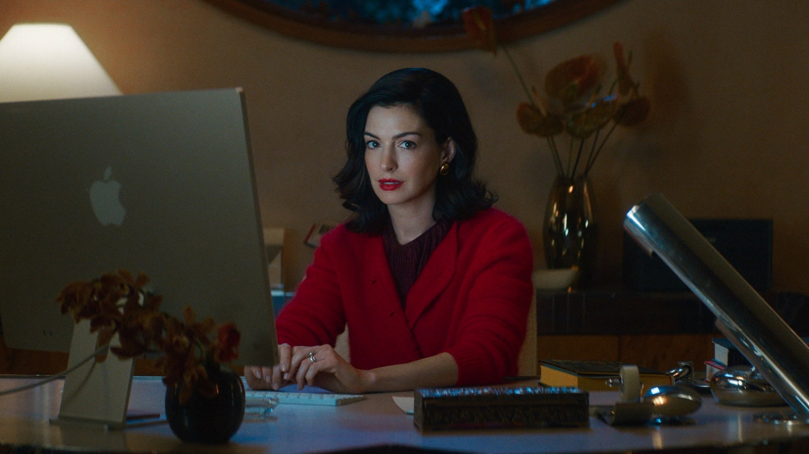
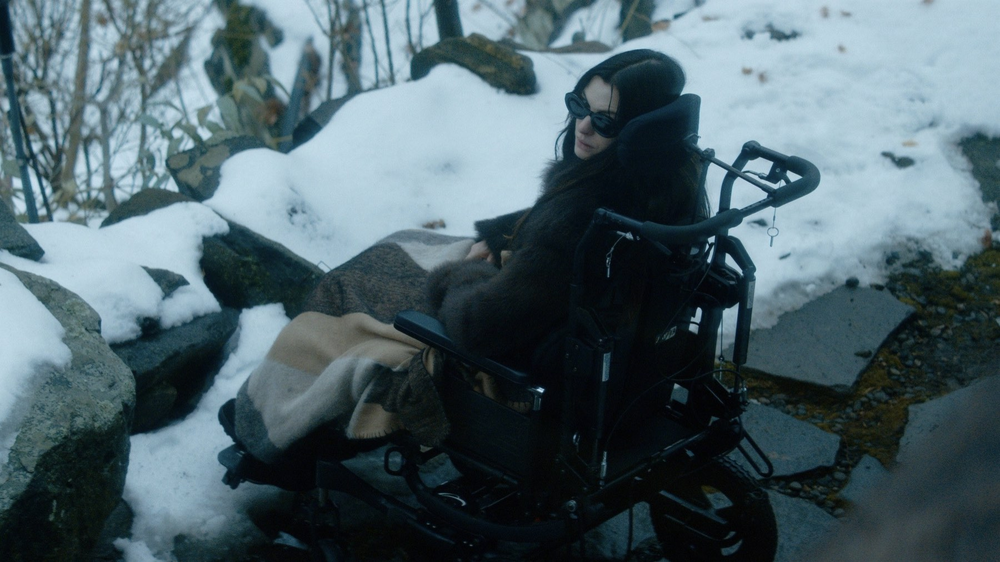
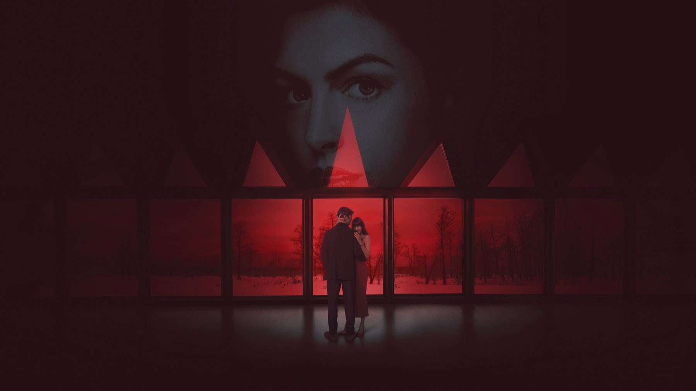

Verity
Il bestseller di Colleen Hoover diventa un thriller patinato con un gran cast, ma la suspense resta sulla pagina
Il primo weekend di un film tratto da un bestseller si misura in due modi: nelle sale e nelle sezioni dei commenti. Verity, nei cinema italiani dal 1° ottobre 2026 con Eagle Pictures, ha cominciato bene sul primo fronte: venerdì 2 ottobre è stato secondo al botteghino italiano, con 130.974 euro e 27.108 spettatori in 318 sale. Sul secondo fronte, quello delle recensioni, la partenza è molto più in salita.
Il film di Michael Showalter adatta il romanzo di Colleen Hoover del 2018 e mette insieme Anne Hathaway, Dakota Johnson e Josh Hartnett. Su Rotten Tomatoes, al momento in cui scriviamo, il consenso della critica è fermo al 33% su 130 recensioni, e su Metacritic il punteggio è 45 su 100. Ma il pubblico, per ora, la pensa diversamente: il Popcornmeter di Rotten Tomatoes segna il 70%. Siamo andati a leggere le recensioni italiane e internazionali per capire dove nasce questa distanza, e che cosa resta a chi in sala ci andrà comunque, magari proprio perché ha amato il libro.
Di cosa parla Verity?
Lowen Ashleigh è una scrittrice in difficoltà economica e creativa. Riceve un'offerta che non può rifiutare: finire la serie di romanzi di Verity Crawford, autrice di enorme successo che dopo un incidente d'auto non è più in grado di scrivere. Lowen si trasferisce nella casa dei Crawford, nel Vermont, per mettere in ordine gli appunti, e lì trova quelli che sembrano gli scritti autobiografici di Verity: pagine inquietanti, con confessioni sul marito Jeremy. Da quel momento diventa difficile distinguere ciò che è finzione da ciò che è accaduto davvero, e l'attrazione dall'ossessione.
Il copione è di Nick Antosca, la fotografia di Jim Frohna, la musica di Volker Bertelmann. Il film ha avuto la prima mondiale il 24 settembre 2026 al Curzon Mayfair di Londra ed è uscito negli Stati Uniti il 2 ottobre, un giorno dopo l'Italia.
Dove il film funziona
Partiamo da ciò che mette d'accordo anche chi non ha amato il film. Erika Sciamanna, su Movieplayer, riconosce l'omaggio estetico al thriller degli anni Novanta e una colonna sonora coerente: è un film che sa che cosa vuole sembrare. Gian Luca Pisacane, su Cinematografo, sottolinea il duello psicologico tra le due protagoniste e la forza del manoscritto ritrovato come motore del sospetto. Il duello è l'idea migliore di Verity: due donne che si studiano a distanza, una che scrive e una che non può più farlo, e in mezzo un uomo di cui nessuna delle due versioni è sicura.
Sul cast il giudizio è meno uniforme, ma un nome torna: quello di Anne Hathaway. Sciamanna la indica come l'unica a emergere, pur giudicando il suo personaggio sfruttato troppo poco. È un problema che conosciamo bene nei thriller costruiti su una figura assente o immobile: se l'attrice più incisiva ha poco spazio, il resto del film deve reggersi su altro.

Dove non convince
Qui le tre recensioni italiane che abbiamo letto, tutte e tre negative, convergono in modo notevole. Sciamanna e Pisacane danno entrambi due stelle su cinque. La prima parla di un'occasione sprecata e di dialoghi poco naturali; il secondo di una trama che intreccia pagina scritta e immagine su binari fin troppo convenzionali e intricati, e di un finale che sembra forzato, più preoccupato di regalare una svolta o una morale che di farle nascere dal racconto. Su MYmovies Paola Casella definisce il film un noir incoerente, con protagonisti poco simpatici, che non raggiunge la raffinatezza dei grandi thriller psicologici.
Il difetto che ci sembra centrale è nel passaggio dalla pagina allo schermo. Il romanzo vive di una verità soggettiva, raccontata da chi scrive e da chi legge: sulla carta il dubbio lavora da solo. Al cinema serve un'immagine che prenda posizione, e Verity, a detta di chi l'ha visto, si ferma a metà strada. Sciamanna lo riassume parlando di un film lucido e vuoto, senza vera suspense; le scene intime, per lei, risultano goffe e inutili alla storia.
C'è poi una questione di tono, che le recensioni segnalano da angolazioni diverse. Quando la tensione non arriva, certi passaggi pensati per inquietare rischiano di far sorridere, e il confine tra thriller e involontaria parodia diventa sottile. Su Rotten Tomatoes le sintesi dei commenti vanno nella stessa direzione: c'è chi lo definisce un film uscito dai binari, e chi lo difende come un film «good-bad», cioè brutto ma godibile. È una sfumatura utile, perché dice a che tipo di spettatore può ancora parlare.

Perché il pubblico lo ama più della critica
La distanza tra il 33% dei critici e il 70% del pubblico su Rotten Tomatoes non ci sorprende. Chi arriva in sala dopo aver letto il libro porta con sé la tensione che il film non costruisce da solo, e perdona più volentieri una sceneggiatura che si limita a richiamarla. Rotten Tomatoes segnala che molti spettatori lamentano le parti del romanzo lasciate fuori e il ritmo, ma apprezzano l'intrattenimento. Il CinemaScore americano, la valutazione data dal pubblico all'uscita dalla sala, è una C+: una via di mezzo che conferma un film accolto senza entusiasmo da nessuno dei due campi.
Vale la pena vederlo al cinema?
Dipende da che cosa cercate. Se volete un thriller psicologico solido, con una tensione che cresce scena dopo scena, le recensioni che abbiamo letto dicono che Verity non lo è, e al cinema vi consigliamo altro. Se invece avete amato il romanzo di Hoover e volete vedere come Anne Hathaway e Dakota Johnson si fronteggiano in una casa isolata, se vi piace l'estetica da thriller anni Novanta e non avete bisogno che tutto torni, il film può diventare una serata di cinema da raccontarsi poi, anche discutendo.
Per noi resta un'occasione mancata, e non per colpa del cast: la materia prima era buona e le due attrici bastano a rendere il film guardabile. Quello che manca è la scelta di regia che dia al dubbio un volto, invece di lasciarlo alle sole parole. Aspetteremo di vedere come reagirà il pubblico nelle prossime settimane, ma per ora il giudizio della critica, italiana e internazionale, ci pare giusto.
Un cast da thriller di lusso e un'estetica anni Novanta ben riuscita, ma poca tensione vera e un finale che sembra forzato. Verity piacerà soprattutto a chi ha amato il romanzo; per gli altri è un'occasione mancata, guardabile più che memorabile.
Domande frequenti
Quando esce Verity in Italia?
Verity è nelle sale italiane dal 1° ottobre 2026, distribuito da Eagle Pictures.
Chi recita in Verity?
Dakota Johnson è Lowen Ashleigh, Anne Hathaway è Verity Crawford e Josh Hartnett è Jeremy Crawford; nel cast anche Ismael Cruz Córdova.
Verity è tratto da un libro?
Sì, dal romanzo omonimo di Colleen Hoover, pubblicato nel 2018. La sceneggiatura è di Nick Antosca.